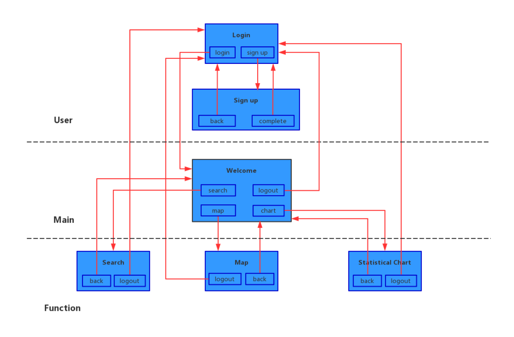

This project is aimed to provide users with pollution data visualization that supports 3-dimensional display, including table, chart and map, of U.S. air pollution data from 2000 to 2016 using HTML+CSS+JavaScript.
Our application aims at supporting to answer these questions:
Find the most serious month (day) of pollution in given year, given state (county, city) and given pollutant by calculating mean value of 1st Max Value of all months (days) of all sites and comparing. Find the year with best / worst air quality with given pollutant and state (county, city) by calculating sum of mean value of all sites of each year and comparing. Find the season with best / worst air quality with given pollutant and state (county, city) by calculating mean value of all sites of each season of each year and comparing. Find the day with best / worst air quality with given pollutant, year and state (county, city) by calculating mean value of all sites and comparing. Find the hour with best / worst air quality with given pollutant, date and state (county, city) by calculating mean value of all sites in that day and comparing. Find the top 3 states with best / worst air quality in given year calculated by mean value of given pollutant and comparing. Find the top 3 states improving most in air quality during 2000-2016 with given pollutant by calculating difference between 2000 and 2016. Display trend of mean / max value of given pollutant in given state (county, city) with start year (month, date) and end year (month, date). The start scale and end scale must be the same (e.g. start 2000, then the end must also be a year like 2016) Display pollution level in a map of United States painted by different color at states level with given air pollutant and given date.This is the UI workflow:
